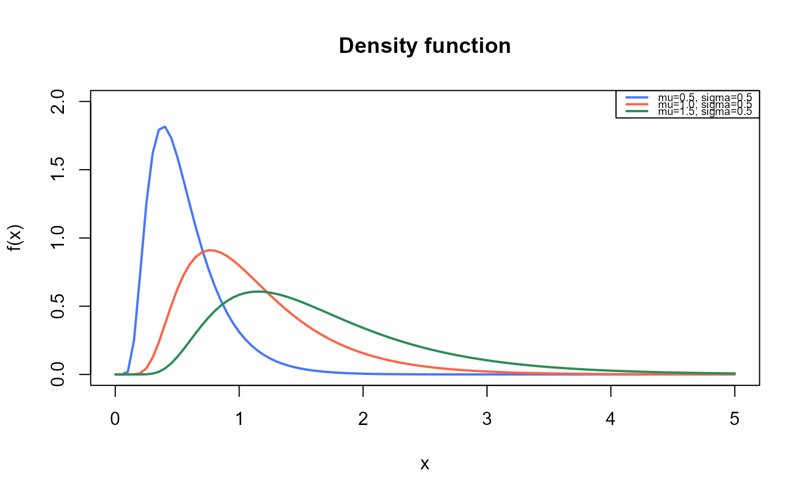
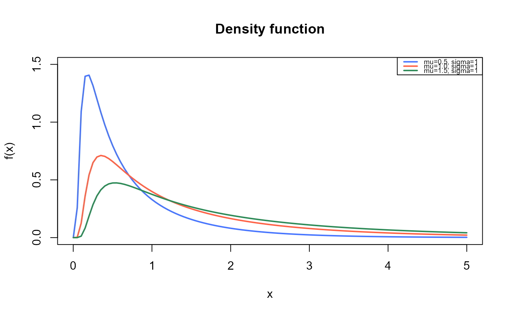
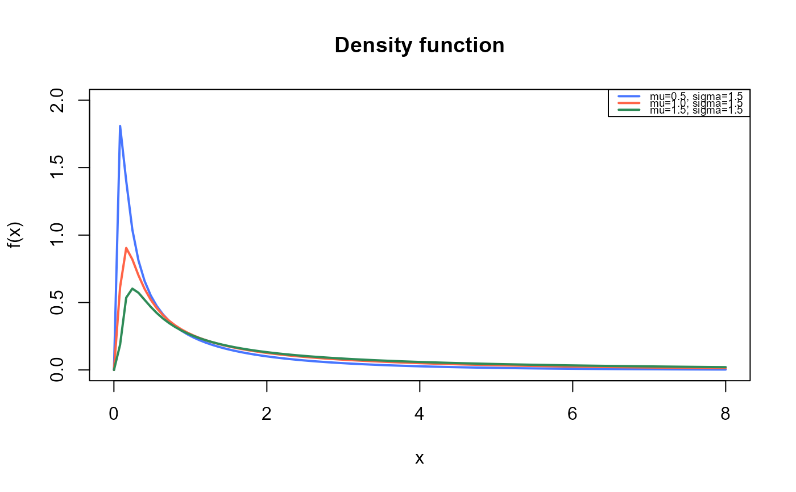
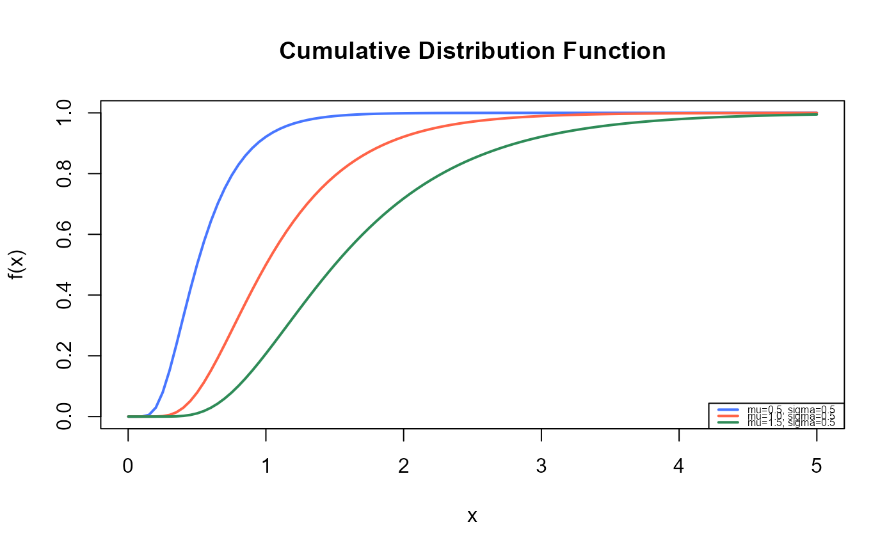
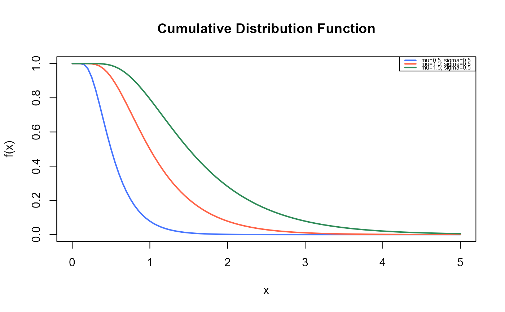
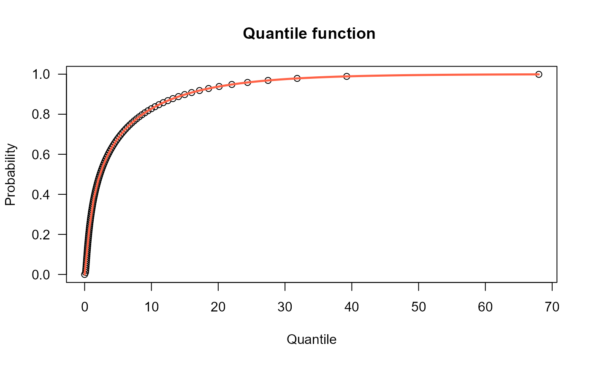
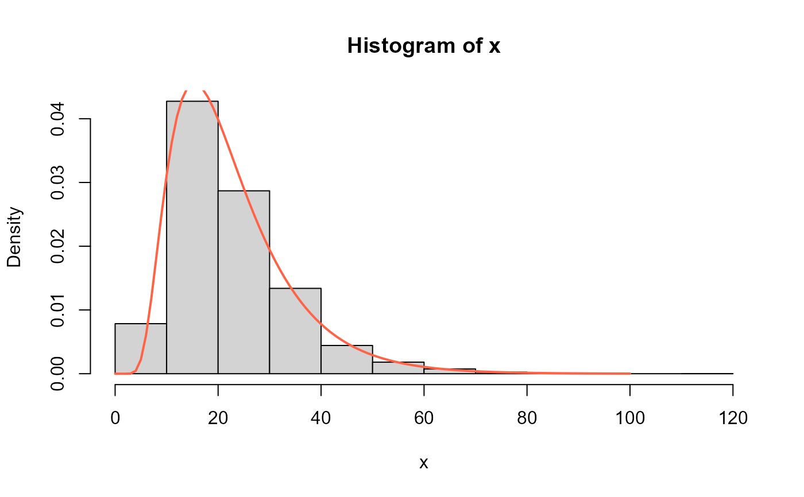
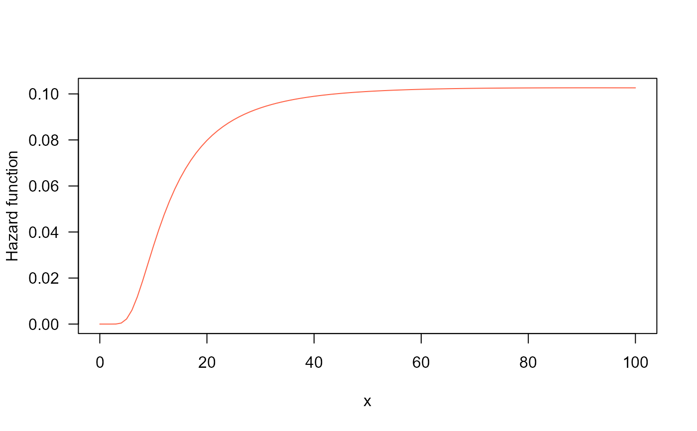

Density, distribution function, quantile function,
random generation and hazard function for the
Birnbaum-Saunders distribution with
parameters mu and sigma.
Usage
dBS(x, mu = 1, sigma = 1, log = FALSE)
pBS(q, mu = 1, sigma = 1, lower.tail = TRUE, log.p = FALSE)
qBS(p, mu = 1, sigma = 1, lower.tail = TRUE, log.p = FALSE)
rBS(n, mu = 1, sigma = 1)
hBS(x, mu, sigma)Value
dBS gives the density, pBS gives the distribution
function, qBS gives the quantile function, rBS
generates random deviates and hBS gives the hazard function.
Details
The Birnbaum-Saunders with parameters mu and sigma
has density given by
\(f(x) = \frac{x^{-3/2}(x+\mu)}{2\sigma\sqrt{2\pi\mu}} \exp\left(\frac{-1}{2\sigma^2}(\frac{x}{\mu}+\frac{\mu}{x}-2)\right)\)
for \(x>0\), \(\mu>0\) and \(\sigma>0\). In this parameterization \(\mu\) is the median of \(X\), \(E(X)=\mu(1+\sigma^2/2)\) and \(Var(X)=(\mu\sigma)^2(1+5\sigma^2/4)\). The functions proposed here corresponds to the functions created by Roquim et al. (2021) with minor modifications to obtain correct log-likelihoods and random samples.
References
Birnbaum, Z.W. and Saunders, S.C. (1969a). A new family of life distributions. J. Appl. Prob., 6, 319-327.
Roquim, F. V., Ramires, T. G., Nakamura, L. R., Righetto, A. J., Lima, R. R., & Gomes, R. A. (2021). Building flexible regression models: including the Birnbaum-Saunders distribution in the gamlss package. Semina: Ciências Exatas e Tecnológicas, 42(2), 163-168.
See also
BS.
Examples
#Example 1
#Plotting the mass function for different parameter values
curve(dBS(x, mu=0.5, sigma=0.5),
from=0.001, to=5,
ylim=c(0, 2),
col="royalblue1", lwd=2,
main="Density function",
xlab="x", ylab="f(x)")
curve(dBS(x, mu=1, sigma=0.5),
col="tomato",
lwd=2,
add=TRUE)
curve(dBS(x, mu=1.5, sigma=0.5),
col="seagreen",
lwd=2,
add=TRUE)
legend("topright", legend=c("mu=0.5, sigma=0.5",
"mu=1.0, sigma=0.5",
"mu=1.5, sigma=0.5"),
col=c("royalblue1", "tomato", "seagreen"), lwd=2, cex=0.6)

curve(dBS(x, mu=0.5, sigma=1),
from=0.001, to=5,
ylim=c(0, 1.5),
col="royalblue1", lwd=2,
main="Density function",
xlab="x", ylab="f(x)")
curve(dBS(x, mu=1, sigma=1),
col="tomato",
lwd=2,
add=TRUE)
curve(dBS(x, mu=1.5, sigma=1),
col="seagreen",
lwd=2,
add=TRUE)
legend("topright", legend=c("mu=0.5, sigma=1",
"mu=1.0, sigma=1",
"mu=1.5, sigma=1"),
col=c("royalblue1", "tomato", "seagreen"), lwd=2, cex=0.6)

curve(dBS(x, mu=0.5, sigma=1.5),
from=0.001, to=8,
ylim=c(0, 2),
col="royalblue1", lwd=2,
main="Density function",
xlab="x", ylab="f(x)")
curve(dBS(x, mu=1, sigma=1.5),
col="tomato",
lwd=2,
add=TRUE)
curve(dBS(x, mu=1.5, sigma=1.5),
col="seagreen",
lwd=2,
add=TRUE)
legend("topright", legend=c("mu=0.5, sigma=1.5",
"mu=1.0, sigma=1.5",
"mu=1.5, sigma=1.5"),
col=c("royalblue1", "tomato", "seagreen"), lwd=2, cex=0.6)

# Example 2
# Checking if the cumulative curves converge to 1
curve(pBS(x, mu=0.5, sigma=0.5),
from=0.001, to=5,
ylim=c(0, 1),
col="royalblue1", lwd=2,
main="Cumulative Distribution Function",
xlab="x", ylab="f(x)")
curve(pBS(x, mu=1, sigma=0.5),
col="tomato",
lwd=2,
add=TRUE)
curve(pBS(x, mu=1.5, sigma=0.5),
col="seagreen",
lwd=2,
add=TRUE)
legend("bottomright", legend=c("mu=0.5, sigma=0.5",
"mu=1.0, sigma=0.5",
"mu=1.5, sigma=0.5"),
col=c("royalblue1", "tomato", "seagreen"), lwd=2, cex=0.5)

curve(pBS(x, mu=0.5, sigma=0.5, lower.tail=FALSE),
from=0.001, to=5,
ylim=c(0, 1),
col="royalblue1", lwd=2,
main="Cumulative Distribution Function",
xlab="x", ylab="f(x)")
curve(pBS(x, mu=1, sigma=0.5, lower.tail=FALSE),
col="tomato",
lwd=2,
add=TRUE)
curve(pBS(x, mu=1.5, sigma=0.5, lower.tail=FALSE),
col="seagreen",
lwd=2,
add=TRUE)
legend("topright", legend=c("mu=0.5, sigma=0.5",
"mu=1.0, sigma=0.5",
"mu=1.5, sigma=0.5"),
col=c("royalblue1", "tomato", "seagreen"), lwd=2, cex=0.5)

#example 3
## The quantile function
p <- seq(from=0, to=0.999, length.out=100)
plot(x=qBS(p, mu=2.3, sigma=1.7), y=p, xlab="Quantile",
las=1, ylab="Probability", main="Quantile function ")
curve(pBS(x, mu=2.3, sigma=1.7),
from=0, add=TRUE, col="tomato", lwd=2.5)

#some values
p <- c(0.25, 0.5, 0.75)
quantile <- qBS(p=p, mu=2.3, sigma=1.7)
for(i in quantile){
print(integrate(dBS, lower=0, upper=i, mu=2.3, sigma=1.7))
}
#> 0.25 with absolute error < 2.3e-08
#> 0.5 with absolute error < 2.2e-09
#> 0.75 with absolute error < 6.1e-06
#example 4
## The random function
x <- rBS(n=10000, mu=20, sigma=0.5)
hist(x, freq=FALSE)
curve(dBS(x, mu=20, sigma=0.5), from=0, to=100,
add=TRUE, col="tomato", lwd=2)

#example 5
## The Hazard function
curve(hBS(x, mu=20, sigma=0.5), from=0.001, to=100,
col="tomato", ylab="Hazard function", las=1)
